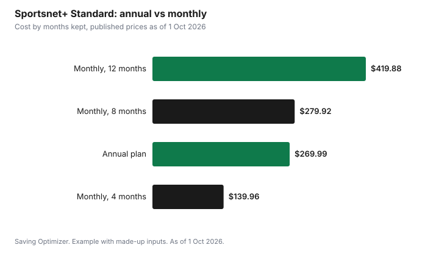

Sports · Canada
TSN+ vs Sportsnet+ for Fans Beyond Hockey

Choose by sport, not by brand. Sportsnet+ is the service for Blue Jays and MLB, and it also carries Raptors and NBA games, UFC and the Grand Slam of Curling. TSN+ is the service for the NFL, CFL, F1, golf majors and tennis Grand Slams, and it also carries Raptors games. As of 1 October 2026, Sportsnet+ Standard is $34.99 a month or $269.99 a year, and TSN Standard is $24.99 a month. The Sportsnet+ annual plan beats paying monthly once you would keep it about eight months; TSN's 3-month and annual prices are on its plan page.
Key takeaways
- Sportsnet+: Blue Jays and MLB, Raptors and NBA, UFC, Grand Slam of Curling, National Bank Open.
- TSN+: NFL, CFL, Raptors, F1, golf majors, tennis Grand Slams; Premium adds LaLiga and PGA Tour Live.
- Sportsnet+ Standard: $34.99 a month or $269.99 a year. Premium: $44.99 or $344.99.
- TSN Standard: $24.99 a month. TSN Premium: $29.99 a month.
- Raptors fans may need both, since games are split; check your team's schedule.
- Example with made-up inputs: rotating services by season costs $340 a year instead of $600.
What each carries
Both services list hockey first, but each carries a lot more. Sportsnet+'s support page lists Raptors and NBA matchups, Blue Jays and MLB, UFC, Grand Slam of Curling, National Bank Open, WNBA, FIBA, FA Women's Super League and Sportsnet original shows on both plans. Premium adds Sportsnet World, the FA Cup, Eredivisie and several rugby competitions. TSN's page lists the NFL, CFL, NBA (Raptors), F1, golf majors and tennis Grand Slams on Standard, and Premium adds NFL RedZone, 24 more NFL games, 75 more NBA games, PGA Tour Live, every LaLiga match and expanded F1, ATP, WTA and NCAA coverage.
| Sport | Sportsnet+ | TSN+ |
|---|---|---|
| Blue Jays and MLB | Yes | Not listed |
| Raptors and NBA | Yes | Yes |
| NFL | Not listed | Yes, all season, playoffs and Super Bowl |
| CFL | Not listed | Yes |
| UFC | Yes | Not listed |
| Curling | Grand Slam of Curling | Curling listed |
| Tennis | National Bank Open | Grand Slams |
| Golf | TGL | Golf majors; PGA Tour Live on Premium |
| Soccer | FA WSL; FA Cup and Eredivisie on Premium | LaLiga on Premium |
| F1 | Not listed | Yes |
Each service's season guide shows when its main sports run. TSN lists the NFL from August to February, NFL RedZone from September to February, the CFL from June to November and the Raptors from October to April. Baseball runs mainly in spring and summer, so a Jays fan's heavy months differ from a football fan's.
Prices
Sportsnet+'s support page lists two plans, each available monthly or yearly. TSN's page lists monthly prices for two plans and offers 3-month and annual options.
| Plan | Monthly | Annual |
|---|---|---|
| Sportsnet+ Standard | $34.99 | $269.99 |
| Sportsnet+ Premium | $44.99 | $344.99 |
| TSN Standard | $24.99 | See TSN plan page |
| TSN Premium | $29.99 | See TSN plan page |
Annual vs monthly
For Sportsnet+, divide the annual price by the monthly price to get the break-even. Standard: $269.99 ÷ $34.99 = about 7.7 months. Premium: $344.99 ÷ $44.99 = about 7.7 months. If you would keep the service eight months or more, annual is cheaper; if you only want the baseball season or only the playoffs, monthly wins. Twelve months of Standard paid monthly cost $419.88, so the annual plan saves $149.89 for a year-round subscriber.
| Plan | 12 months monthly | Annual | Saving | Break-even |
|---|---|---|---|---|
| Standard | $419.88 | $269.99 | $149.89 | About 7.7 months |
| Premium | $539.88 | $344.99 | $194.89 | About 7.7 months |
TSN's page says plans renew for the selected period (monthly in Quebec), that prices may increase during the subscription, that there are no refunds, and that you can cancel anytime. TSN allows two concurrent streams. Before buying an annual plan on either service, check the cancellation terms at checkout.
Travel and household limits
Streaming rights are tied to where you are. TSN's FAQ says TSN is only available for subscription and use within Canada because of licensing agreements, and it gives the example of a Toronto resident who travels to Vancouver and faces a regional blackout for a Maple Leafs game outside the Toronto broadcast region. That rule matters most for hockey, but it is a reminder that a subscription may not follow you everywhere. Sportsnet's support site has a separate article on international access; read it before a trip. TSN allows two concurrent streams, so a household with several viewers watching different games at once may hit the limit.
| Question | Why it matters |
|---|---|
| Which plan carries my team's games? | Standard and Premium differ |
| When does my sport's season run? | Avoid paying in the off-season |
| How many screens at once? | Households with several viewers |
| Can I watch while travelling? | Rights depend on location |
| What are the renewal and refund terms? | Annual plans can lock you in |
| Does my TV package already include it? | You may already have access |
Bundles
TSN's page offers bundles with Crave and with RDS. Sportsnet's support pages mention a Sportsnet+ and Citytv+ bundle, Sportsnet+ on Prime Video and a Rogers Wireless discount. Bundles save money only if you would pay for both parts anyway. If you already get TSN or Sportsnet through a TV package, you may be able to sign in through your provider at no extra cost; see auditing Rogers and Bell streaming add-ons.
Example with made-up inputs: rotating by season
These numbers are an example with made-up inputs. They are not TSN or Sportsnet prices. A fan follows baseball and football. Keeping both services all year at $25 a month each costs $600. Rotating, they keep the baseball service from April to September, six months at $25, and the football service from September to February, six months at $25, with one overlap month in September at $40 for the second service's promotional rate. Total: $150 + $150 + $40 = $340.
| Approach | Cost |
|---|---|
| Both services all year | $600 |
| Baseball service, 6 months | $150 |
| Football service, 6 months | $150 |
| Overlap month | $40 |
| Rotated total | $340 |

Choosing
- List the teams and sports you really watch, and the months they run.
- Match each to the service that carries it.
- For Raptors fans, check which service carries the games you want.
- Compare annual versus monthly with the break-even months.
- Check whether your TV package already includes either service.
- Set reminders to cancel at the end of each season.
For hockey specifically, see watching the NHL in Canada. For football, see watching the NFL in Canada.
Sources
- Sportsnet+, How much does Sportsnet+ cost, support.sportsnetplus.ca, as of 1 Oct 2026. Standard and Premium monthly and annual prices.
- Sportsnet+, What is the difference between Sportsnet+ STANDARD and PREMIUM, support.sportsnetplus.ca, as of 1 Oct 2026. Content on each plan; related bundle and discount articles.
- TSN, TSN+ subscription page, tsn.ca/plus, as of 1 Oct 2026. Standard and Premium monthly prices, content, seasons, bundles, two concurrent streams, renewal and refund terms.
- The monthly prices, months and overlap in the example are an example with made-up inputs.
Frequently asked questions
How much is Sportsnet+ in 2026-27?
Sportsnet+'s support page lists Standard at $34.99 a month or $269.99 a year, and Premium at $44.99 a month or $344.99 a year, as of 1 Oct 2026.
How much is TSN+?
TSN's page lists TSN Standard at $24.99 a month and TSN Premium at $29.99 a month, as of 1 Oct 2026. It also offers 3-month and annual plans.
Which service has the Blue Jays?
Sportsnet+ lists Blue Jays and MLB on both its Standard and Premium plans.
Which service has the NFL and CFL?
TSN+ lists the NFL all season plus the playoffs and Super Bowl, and the CFL from June to November.
Is the Sportsnet+ annual plan worth it?
If you would keep it about eight months or more. The annual Standard plan, $269.99, equals about 7.7 months at $34.99 and saves $149.89 over 12 monthly payments.
Do Raptors fans need both services?
Possibly. Both TSN+ and Sportsnet+ list Raptors games, so following every game may need both. Check which service carries the games you care about before paying for two.
Researched and drafted with AI assistance and fact-checked against official Canadian sources. How we create content.
Disclosure: Saving Optimizer may earn a commission if a partner link is added later, such as a streaming offer type. No partnership is claimed on this page. Education only.